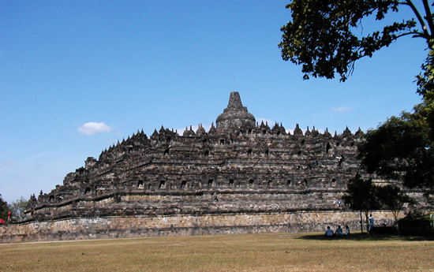

Indonesia Trav-E-Logs©
| Yogyakarta / Borubodur
|
|
| back: Sumatra to Java | Mt. Merapi dominates Borubodur and the Yogya skyline. |
================================= Arrived at Jakarta's port of Tanjung Pirok, and immediately shared a ride to the train station. After purchasing our tickets for Yogya, found places to get on line and stock up on fruit while waiting for our train. =================================
July 18 - 22, 2003
| The train ride was quiet -- maybe too quiet. In Yogya, tried to find the same place from four years ago, but apparently it was one of many that didn't survive. Ended up taking a tout's recommendation, as his guesthouse was clean and reasonable. Being my third trip to Yogya, my primary interests are eating Yogya's traditional dish of Nasi Gudeg, and revisiting Borubodur and Prambanan. The former is the largest Buddhist temple in S.E.Asia (c.780 AD), and pre-dates those famous complexes at Bagan and Angkor. The latter is the oldest Hindu site in S.E.Asia (856 AD). These historic locations were visited on my first trip to Indonesia and Malaysia in 1992, but now I want to take pictures for the Trav-E-Log web site. The following morning a bus delivers me to Borubodur, and I'm delivered the first shock of the day as the admission price has jumped to eight times the price from just a few years ago. It appears the government feels the tourist will pay any amount to see the sites, so foreigners have to pay many times the admission price of locals. To add insult, they now also charge an additional admission for the museum. Several hours are spent photographing the intricate details on the temple walls as each level is examined. One panel shows workers unloading a sailing ship, a possible reference to trade with India and Sri Lanka when constructed during the 8th century. As the top of the monument is approached, my big flash card is filled so a smaller card is inserted. Quite a few young adults are on the top, recklessly climbing over the stupas and ignoring the signs; the only Park officials seen are down in the offices or collecting money. After spending an hour on top shooting the stupas and buddhas under clear sky, it's time to make a decent. Walking around the bottom of the entire complex unveils more photo opportunities. Then it's time to grab a bite to eat and head back into town. On the crowded bus seat next to me is a young lady, covering her hair like most women in Indonesia. The bus has many college aged students on board, and the young man behind me stands up, leans over the seat, and feigns sickness -- as if he is going to get sick directly on my seat. I ignore him and he sits down after a minute. Five minutes latter, he does the same thing, and I continue to ignore him. On his third attempt, the young lady next to me physically shoves me off the seat into the isle, and I'm immediately surrounded by a dozen young folks, pushing and shoving. I know I'm the target, and clutch my day sack closely in front of me. After a minute, everyone stops and I'm left standing alone in the middle of the isle. Another person offers that these people are crazy, and suggests I move to the front of the bus. It doesn't matter, because this is my bus stop, so I get off and instinctively check for everything. Opening my waist sack delivers the biggest shock of the day, as my camera with two of three memory cards is missing. Bill |
 |
------------------------------
"Travel is Fatal to Bigotry, Prejudice, and Narrow-minded ness" .... attributed to Mark Twain
| next: Bali |
| back: Sumatra to Java |